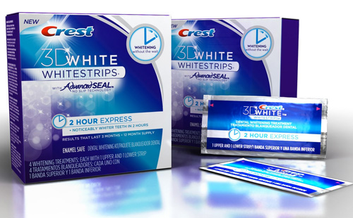

Отбеливающие полоски
Привлекательная улыбка всегда является предметом человеческого внимания. И, наверное, каждый сознательный человек хочет иметь здоровые, красивые и белые зубы. И как же достигнуть этой привлекательной и белоснежной улыбки? Вот мы и поговорим об отбеливании зубов в домашних условиях с приминением отбеливающих полосок Crest 3D White.
Что они из себя представляют и как они работают?
Отбеливающие полоски Crest - это небольшие кусочки полиэтилена, изготовленные из высококачественного материриала, которые надежно фиксируются и принимают форму зубов. Покрыты полоски специальной липкой смесью для расщепления пигментных пятен и налета. Отбеливающий гель имеет такие компоненты, как вода, глицерин, перекись водорода, сахарин натрия, а также гидроксид натрия. Этот состав полосок не только улучшает цвет эмали, но и предотвращает накопление налета, а также снижает уровень кислотности. Эффект от применения сохраняется в течение года.
Как правильно использовать полоски?
Половина успешного результата зависит от того, насколько правильно средство будет ипользоваться в домашних условиях. В первую очередь необходимо провести тщательную гигиену полости рта. Отбеливающие полоски с гелем аккуратно отделяем от прозрачной подложки и наносим на зубы на 30 мин. Лучше всего накладывать средство перед зеркалом. Чем плотнее полоска будет прилегать к зубам, тем быстрее можно будет увидеть эффект отбеливания. Выступающие края полиэтилена можно загнуть на внутреннюю поверхность зубов.
Людям с чувствительной эмалью стоит придерживаться некоторых рекомендаций. Чистить зубы следует за несколько часов до процедуры. Гель, который остается в полости рта, необходимо смывать обычной водой. Можно дополнительно использовать пасту для укрепления эмали. Избегайте каких-либо продуктов с красителями в течение приблизительно 2 часов. Поры в ваших зубах открыты после отбеливания и могут быть более восприимчивыми к окрашиванию. И РЕКОМЕНДАЦИЯ ВСЕМ - ДЕЛАТЬ ПРОЦЕДУРУ ЧЕРЕЗ ДЕНЬ! Хорошего эффекта удается достичь через две недели регулярного использованя полосок. При этом, первые резутьтаты заметны уже через несколько дней.
Я хочу напомнить, что отбеливания зубов показано не всем.
Полоски Crest Whitestrips отбеливают только натуральные зубы. Коронки, пломбы и мосты отбелить нельзя. Важным условием является отсутствие на передних зубах виниров, протезов, пломб. Нежелательно отбеливать зубы с парадонтитом и чувствительной эмалью. А если у Вас таких проблем нет, то отбеливающие полоски Crest 3D White комфортно усовершенствуют цвет Ваших зубов. И, как стоматолог, я рекомендую полоски Crest, - используя их Вы будете иметь хороший эффект за приемлемую цену.
Хочу предупредить! Не покупайте дешевые китайские подделки, так как можете получить непредсказуемое воздейсвие полосок на зубы.
Оригинальные полоски - это гарантия качества от Procter&Gamble - Crest 3D White USA
Улыбайтесь! Будьте красивыми!
Если есть вопросы или желание приобрести отбеливающие полоски Crest, обращайтесь по тел. +3(096) 882-30-28